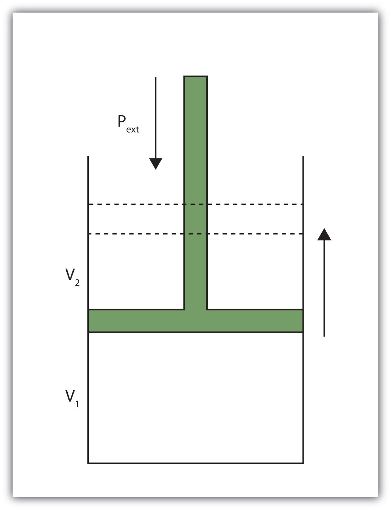

We have already defined work as a force acting through a distance. It turns out that there are other equivalent definitions of work that are also important in chemistry.
When a certain volume of a gas expands, it works against an external pressure to expand (Figure 7.2 "Volume versus Pressure"). That is, the gas must perform work. Assuming that the external pressure Pext is constant, the amount of work done by the gas is given by the equation
w = −Pext × ΔVwhere ΔV is the change in volume of the gas. This term is always the final volume minus the initial volume,
ΔV = Vfinal − Vinitialand can be positive or negative, depending on whether Vfinal is larger (is expanding) or smaller (is contracting) than Vinitial. The negative sign in the equation for work is important and implies that as volume expands (ΔV is positive), the gas in the system is losing energy as work. On the other hand, if the gas is contracting, ΔV is negative, and the two negative signs make the work positive, so energy is being added to the system.
Figure 7.2 Volume versus Pressure
When a gas expands against an external pressure, the gas does work.
Finally, let us consider units. Volume changes are usually expressed in units like liters, while pressures are usually expressed in atmospheres. When we use the equation to determine work, the unit for work comes out as liter·atmospheres, or L·atm. This is not a very common unit for work. However, there is a conversion factor between L·atm and the common unit of work, joules:
1 L·atm = 101.32 JUsing this conversion factor and the previous equation for work, we can calculate the work performed when a gas expands or contracts.
What is the work performed by a gas if it expands from 3.44 L to 6.19 L against a constant external pressure of 1.26 atm? Express the final answer in joules.
Solution
First we need to determine the change in volume, ΔV. A change is always the final value minus the initial value:
ΔV = Vfinal − Vinitial = 6.19 L − 3.44 L = 2.75 LNow we can use the definition of work to determine the work done:
w = −Pext · ΔV = −(1.26 atm)(2.75 L) = −3.47 L·atmNow we construct a conversion factor from the relationship between liter·atmospheres and joules:
We limit the final answer to three significant figures, as appropriate.
Test Yourself
What is the work performed when a gas expands from 0.66 L to 1.33 L against an external pressure of 0.775 atm?
Answer
−53 J
Heat is another aspect of energy. HeatThe transfer of energy from one body to another due to a difference in temperature. is the transfer of energy from one body to another due to a difference in temperature. For example, when we touch something with our hands, we interpret that object as either hot or cold depending on how energy is transferred: If energy is transferred into your hands, the object feels hot. If energy is transferred from your hands to the object, your hands feel cold. Because heat is a measure of energy transfer, heat is also measured in joules.
For a given object, the amount of heat (q) involved is proportional to two things: the mass of the object (m) and the temperature change (ΔT) evoked by the energy transfer. We can write this mathematically as
where ∝ means “is proportional to.” To make a proportionality an equality, we include a proportionality constant. In this case, the proportionality constant is labeled c and is called the specific heat capacityThe proportionality constant between heat, mass, and temperature change; also called specific heat., or, more succinctly, specific heat:
q = mcΔTwhere the mass, specific heat, and change in temperature are multiplied together. Specific heat is a measure of how much energy is needed to change the temperature of a substance; the larger the specific heat, the more energy is needed to change the temperature. The units for specific heat are or , depending on what the unit of ΔT is. You may note a departure from the insistence that temperature be expressed in Kelvin. That is because a change in temperature has the same value whether the temperatures are expressed in degrees Celsius or kelvins.
Calculate the heat involved when 25.0 g of Fe increase temperature from 22°C to 76°C. The specific heat of Fe is 0.449 J/g·°C.
Solution
First we need to determine ΔT. A change is always the final value minus the initial value:
ΔT = 76°C − 22°C = 54°CNow we can use the expression for q, substitute for all variables, and solve for heat:
Note how the g and °C units cancel, leaving J, a unit of heat. Also note that this value of q is inherently positive, meaning that energy is going into the system.
Test Yourself
Calculate the heat involved when 76.5 g of Ag increase temperature from 17.8°C to 144.5°C. The specific heat of Ag is 0.233 J/g·°C.
Answer
2,260 J
As with any equation, when you know all but one variable in the expression for q, you can determine the remaining variable by using algebra.
It takes 5,408 J of heat to raise the temperature of 373 g of Hg by 104°C. What is the specific heat of Hg?
Solution
We can start with the equation for q, but now different values are given, and we need to solve for specific heat. Note that ΔT is given directly as 104°C. Substituting,
5,408 J = (373 g)c(104°C)We divide both sides of the equation by 373 g and 104°C:
Combining the numbers and bringing together all the units, we get
Test Yourself
Gold has a specific heat of 0.129 J/g·°C. If 1,377 J are needed to increase the temperature of a sample of gold by 99.9°C, what is the mass of the gold?
Answer
107 g
Table 7.1 "Specific Heats of Various Substances" lists the specific heats of some substances. Specific heat is a physical property of substances, so it is a characteristic of the substance. The general idea is that the lower the specific heat, the less energy is required to change the temperature of the substance by a certain amount.
Table 7.1 Specific Heats of Various Substances
| Substance | Specific Heat (J/g·°C) |
|---|---|
| water | 4.184 |
| iron | 0.449 |
| gold | 0.129 |
| mercury | 0.139 |
| aluminum | 0.900 |
| ethyl alcohol | 2.419 |
| magnesium | 1.03 |
| helium | 5.171 |
| oxygen | 0.918 |
Give two definitions of work.
What is the sign on work when a sample of gas increases its volume? Explain why work has that sign.
What is the work when a gas expands from 3.00 L to 12.60 L against an external pressure of 0.888 atm?
What is the work when a gas expands from 0.666 L to 2.334 L against an external pressure of 2.07 atm?
What is the work when a gas contracts from 3.45 L to 0.97 L under an external pressure of 0.985 atm?
What is the work when a gas contracts from 4.66 L to 1.22 L under an external pressure of 3.97 atm?
Like work, the sign on heat can be positive or negative. What is happening to the total energy of a system if heat is positive?
Like work, the sign on heat can be positive or negative. What is happening to the total energy of a system if heat is negative?
What is the heat when 55.6 g of Fe increase temperature from 25.6°C to 177.9°C? The heat capacity of Fe is in Table 7.1 "Specific Heats of Various Substances".
What is the heat when 0.444 g of Au increases temperature from 17.8°C to 222.5°C? The heat capacity of Au is in Table 7.1 "Specific Heats of Various Substances".
What is the heat when 245 g of H2O cool from 355 K to 298 K? The heat capacity of H2O is in Table 7.1 "Specific Heats of Various Substances".
What is the heat when 100.0 g of Mg cool from 725 K to 552 K? The heat capacity of Mg is in Table 7.1 "Specific Heats of Various Substances".
It takes 452 J of heat to raise the temperature of a 36.8 g sample of a metal from 22.9°C to 98.2°C. What is the heat capacity of the metal?
It takes 2,267 J of heat to raise the temperature of a 44.5 g sample of a metal from 33.9°C to 288.3°C. What is the heat capacity of the metal?
An experimenter adds 336 J of heat to a 56.2 g sample of Hg. What is its change in temperature? The heat capacity of Hg is in Table 7.1 "Specific Heats of Various Substances".
To a 0.444 g sample of H2O, 23.4 J of heat are added. What is its change in temperature? The heat capacity of H2O is in Table 7.1 "Specific Heats of Various Substances".
An unknown mass of Al absorbs 187.9 J of heat and increases its temperature from 23.5°C to 35.6°C. What is the mass of the aluminum? How many moles of aluminum is this?
A sample of He goes from 19.4°C to 55.9°C when 448 J of energy are added. What is the mass of the helium? How many moles of helium is this?
Work is a force acting through a distance or a volume changing against some pressure.
−864 J
248 J
When heat is positive, the total energy of the system is increasing.
3.80 × 103 J
−58,400 J
0.163 J/g·°C
43.0°C
17.3 g; 0.640 mol